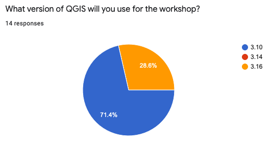

class: center, middle ## MAGIC Essentials of QGIS Workshop ### January 8, 2021 ##### Questions? email Professor Seeger cjseeger@iastate.edu ### This presentation: https://isueogtp.github.io/Workshops/QGIS/MAGIC2021/agenda.html _Use arrow keys to move forward/backwards through slide show._ --- ### Welcome and Introductions Christopher J. Seeger - Professor, Iowa State University <br> Amy Logan - Research Scientist, Iowa State University GIS Facility <br> Thomas Petitti - Geospatial Technology Program Intern <br> <img src="images/chris_amy_headshots.png" alt="" style="width: 50%;"/> --- ### Workshop Overview Data files are located at https://github.com/ISUEOGTP/Workshops/tree/main/QGIS/MAGIC2021 Direct download is: --- ### Today's Agenda: ####8:00 - 8:35#### Welcome and Introductions<br> Workshop Overview<br> Getting Started<br> - Installing QGIS - What is QGIS? - Interface Overview - Explore Sample Data & Project 5-minute break <br> ####8:40 – 9:15#### Loading Data - GIS Data Types Styling Data<br> Exercise: - Loading XYZ layer and visualizing GPS data (Styling a Heat map from GPX points) <br> ####9:15 - 9:30#### Loading Data and Styling on your own <br> 5-minute break --- ####9:35 - 10:00#### Working with tables<br> - Table Editing - Table Joining - Statistics/Summary - Calculate Values - Working with expressions - Table and Field Management Tips (Brief Intro to Processing Tools) <br> ####10:00 – 10:20#### Practice what you have learned so far (Challenge Problem) <br> ####10:20 – 10:50#### Spatial Processing<br> - PlugIns - Overview of Vector and Raster Menu Processing Toolbox - Buffering, Clipping, Intersection, Union - Spatial Join Creating Data - Digitizing Data - Geocoding - Creating a GeoPackage 10 Minute Break / Practice --- ####11:00 – 11:30#### Creating Maps - Labeling - Map Layout - Adding Maps and object to a layout - Customizing the map layout options/properties Exporting Maps and Data - Exporting Map Layout - Map Images - SVG and PDF Maps - Web Maps (covered in next section) <br> ####11:30 – 11:40#### Practice what you have learned <br> ####11:40 – 12:00#### As time permits - Export a Web Map - Working with Geotagged Photos - Importing OSM Data - Create a Map Atlas - Georeferencing a raster image --- --- ### Installing QGIS ### To install QGIS, visit https://www.qgis.org/en/site/ and click the Green Download Now button. Version 3.10 or above is recommended. <br> Mac OS - Please click the link for the alternative Installers. You can optionally use these to install QGIS, however the part we want you to read on the Alternative Build installers page is the information on how to open QGIS the first time so the Mac OS security knows it is an approved software. <br> Windows OS - For this course, don't install the OSGeo4W installers. Instead install one of the Standalone installers for your system. If you have Windows 10 then install the 64 Bit version 3.10.  --- ### What is QGIS --- ### Interface Overview --- ### Explore Interface --- - <a href="https://geojson.io" target="_blank">Geojson.io</a> ---